Requerimientos Funcionales
| requerimiento-001 inicio de sesión |
prioridad:
complejidad |
alta:x
alta : |
medio :
medio :x |
bajo :x
bajo : |
| entradas |
- documento de indetidad
- contraseña
- boton de entrada
|
| salidas |
- redireción al panel correspondiente al rol de usuario
- mensajes de error o exito
|
| rol |
- administador
- aprendiz
- intructor
|
Incion de sesión
El sistema debe contar con un modulo de inicio de sesión (login) que permita el acceso a tres tipos de usarios.
administrador, instructor y aprendises este modulo debe validar las credenciales del usuario y dependiendo de rol, redirigirlo
al interfaz correspondiente con las funcionalidades especificas asignadas a cada tipo de rol.
Acceso a modulo de login
el usuario accede al sistema atraves de una pantalla inicial donde se solicita
Validación de credenciales
El sistema verifica las credenciales integradas:
usuario: Bebe coincidir con un registro de existente en la base de datos
Contraseña:debe concidir con la almacenada de manera segura.
Si las credenciales son válidas, el sistema identifica los permisos suministradores por el administrador a la hora de crear su perfil. asociado al usuario y lo redirige a su respectiva interfaz.
Si las credenciales no son válidas, se muestra un mensaje de error como:
"Usuario o contraseña incorrectos. Por favor, intente nuevamente."
Manejo de errores
Si las credenciales son incorrectas o el usuario intenta acceder sin estar registrado, el sistema muestra un mensaje de error claro y específico que indicara: “Usuario o contraseña invalido”
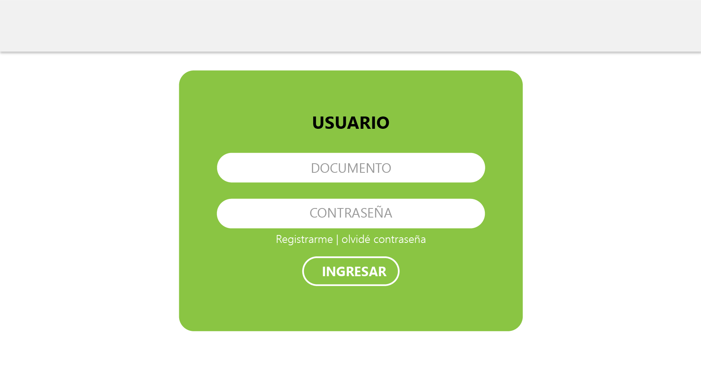
| requerimiento-002 modulo de usuario |
prioridad:
complejidad |
alta:x
alta : |
medio :
medio :x |
bajo :
bajo : |
| entradas |
- Nombre compreto: nombre y apellido del usuario
- Número de telefono
- Coreo electronico
- Contraseña: Creada por el usuario o asignada temporalmente por el sistema
- Número de identificación: Documento único que identifica al usuario.
- Rol: Selección entre Aprendiz, Instructor o Administrador
- Sistema permisos
|
| salidas |
|
| rol |
- Administador
- Instructor
- Aprendiz
|
Crear usuario
El sistema debe permitir la creación de usuarios asociados a uno de los tres roles definidos: Aprendiz, Instructor o Administrador. Cada usuario debe contar con datos y permisos personalizados según las funcionalidades que le corresponden.
- Nombre completo: Nombre y apellidos del usuario.
- Contraseña: Creada por el usuario o asignada temporalmente por el sistema.
- Número de identificación: Documento único que identifica al usuario.
- Rol: Selección entre Aprendiz, Instructor o Administrador.
Datos iniciales por el rol
Rol : aprendiz
- ficha de formación: Número único que identifica al grupo al que pertenece el aprendiz.
- numero de identificación:: Para garantizar la autenticación correcta
- Etapa lectiva (Descargar reportes de asistencia, consultar su horario, visualizar su historial de asistencias)
- Etapa productiva (subir bitácoras, enviar solicitudes, relleno de formato)
Rol: instructor
- especialidad:campo relacionada con el campo de enseñanza
- grupo asignados:lista de fichas a las que imparte formación
Permisos:
- etapa productiva ( enviar bitácoras)
- consulta de horarios de sus grupos
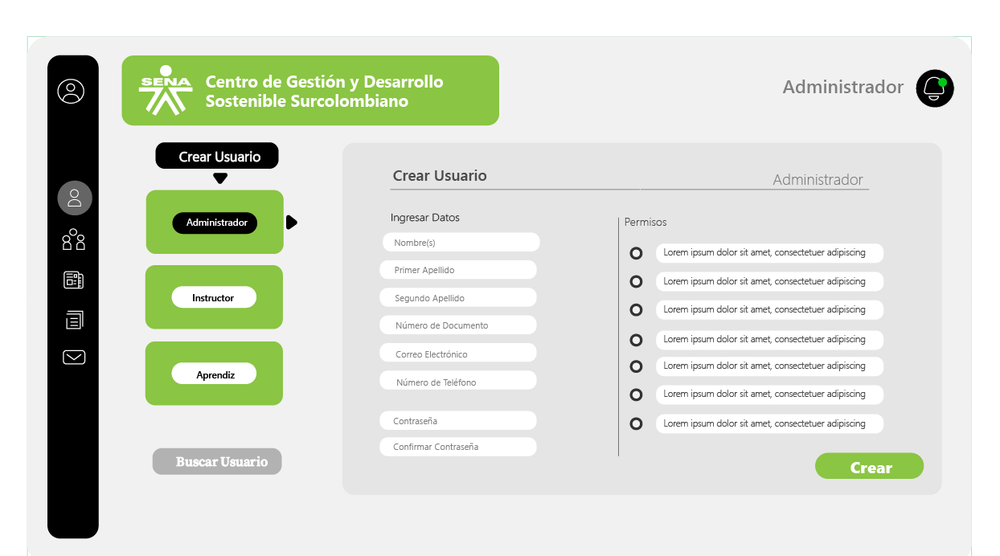
| requerimiento-002,1 Modulo Buscar Usuario |
prioridad:
complejidad |
alta:x
alta : |
medio :
medio :x |
bajo :
bajo : |
| entradas |
- Rol
- Número de identificación
- Nombre
|
| salidas |
- Redireccion al registro de usuario
|
| rol |
|
Buscar usuario
El submódulo "Usuario" permite gestionar y buscar usuarios mediante filtros, número de identificación o nombre. Facilita
la administración del estado de los aprendices, incluyendo la transición de etapa lectiva a etapa productiva, actualizando
sus permisos automáticamente según la nueva etapa. Además, proporciona una interfaz clara para localizar usuarios y realizar
modificaciones rápidas y precisas en su información y estado dentro del sistema
- Funcionalidades principales:
- Búsqueda de Usuario:
- Filtros Disponibles:
- Rol: Filtra usuarios segun su rol(Aprendiz, instructor, administador)
- Número de identificación:permite encontrar un usuario especifico ingresando su identificación unica
- Nombre: Realiza búsquedas por coincidencias parciales o completas con el nombre del usuario
- Cambio de Etapa de un Aprendiz:
- Permite pasar a un aprendiz de la etapa lectiva a la etapa productiva.
- Al realizar el cambio, el sistema:
- Actualiza el estado del aprendiz
- Otorga los permisos específicos necesarios para la etapa productiva (subir bitácoras, enviar solicitudes, relleno de formato).
- Validaciones Necesarias:
- Permite pasar a un aprendiz de la etapa lectiva a la etapa productiva.
- Al realizar el cambio, el sistema:
- actualiza el estado del aprendiz
- Otorga los permisos específicos necesarios para la etapa productiva (subir bitácoras, enviar solicitudes, relleno de formato).
2.validación necesarias
Filtros de busqueda:
- Al menos un filtro debe estar activo para realizar la búsqueda.
- Los resultados deben mostrar datos del usuario (Nombre completo: Nombre y apellidos del usario.)
- Contraseña: Creada por el usuario o asignada temporalmente por el sistema.
- Número de identificación: Documento único que identifica al usuario.
- (Rol: Aprendiz, Instructor o Administrador).
Cambios de etapa:
- Verificar que el aprendiz cumple con los requisitos necesarios para la transición (completar la fase de etapa lectiva).
- Notificar al usuario sobre el éxito o fallo del cambio de etapa.
Rol aprendiz
- El usuario ingresa el nombre, rol o número de identificación en el filtro.
- Se muestra una lista con los resultados correspondientes.
- Para aprendices en etapa lectiva, aparece un botón de acción para cambiar a etapa productiva.
- El usuario confirma el cambio.
- El sistema:
- Actualiza el estado del aprendiz
- Otorga los permisos necesarios para la nueva etapa.
- Notifica al administrador y al aprendiz.
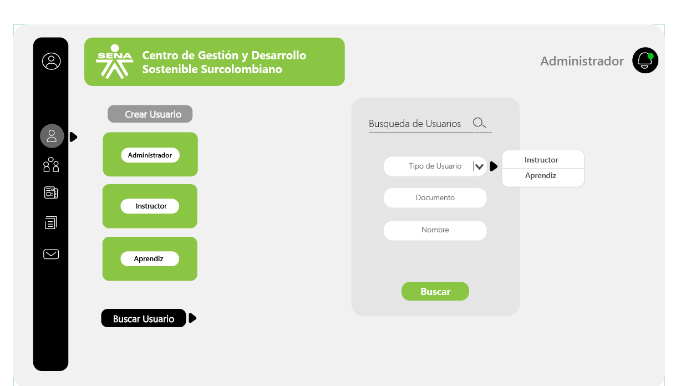
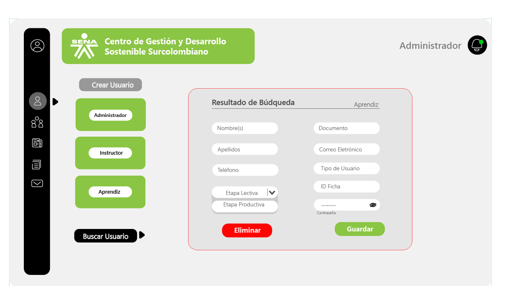
| requerimiento-003 Modulo Horario |
prioridad:
complejidad |
alta:x
alta : |
medio :
medio :x |
bajo :
bajo : |
| entradas |
- rol
- Nombre del aprendiz o instructor
- Numero de identificacion
- ficha de formacion
|
| salidas |
|
| rol |
|
Modulo Horario
1.Descripción fucional
El módulo de "Asignación de Horarios" permite a los administradores gestionar los horarios de aprendices y instructores de manera eficiente. A través de este módulo, se pueden asignar horarios específicos a grupos de estudiantes o instructores, asegurando que cada actividad esté organizada de acuerdo con las necesidades del sistema educativo.
2.funcionaledades principales :
- 1. busqueda de usuarios (aprendices e instructores )
- nombre del aprendiz o instructor
- ficha de formacion (para aprendices)
- Resultado de busqueda: Mostrar una lista con la informacion relevante,como :
- rol (Aprendizes o instructor)
2.Asignación de horarios:
- Seleccionar el usuario (aprendiz o instructor) al que se asignará el horario.
- Seleccionar el horario, especificando:
- Horario (bloques de tiempo).
- actividad o curso asignado
- Posibilidad de asignar horarios grupales para aprendices de una misma ficha de formación
3. visualización del horario asiganado
- Mostrar una vista previa del horario asignado antes de confirmarlo.
- Indicar si existen conflictos de horario para el usuario (aprendiz o instructor).
- 4. confirmación de Asignación
- Botón "Confirmar Asignación" para guardar los horarios en el sistema.
- Mensaje de confirmación, incluyendo:
- Detalles del horario asignado.
- Indicaciones en caso de conflicto (si no se puede asignar un horario debido a superposición o disponibilidad).
- 5. Edición y eliminación de horarios:
- Función para modificar horarios previamente asignados, permitiendo:
- Cambiar días, horas o actividades
- Reasignar horarios en caso de ajustes necesarios.
- Opción para eliminar horarios asignados si ya no son requeridos.
3. validación necesarias
- Verificar que el usuario (aprendiz o instructor) esté registrado en el sistema.
- Validar la disponibilidad del usuario para el horario asignado, evitando superposición con horarios previamente establecidos.
- Confirmar que las aulas o ubicaciones asignadas estén disponibles para los bloques seleccionados
- En el caso de grupos, validar que todos los aprendices de una ficha tengan el mismo horario asignado
4.pantallas principales
1. pantalla de busqueda
- Campo de búsqueda con filtros (nombre, identificación, ficha, etc.).
- Lista de resultados con opciones para seleccionar al usuario.
- 2. pantalla de asignación
- Formulario para ingresar los detalles del horario: día(s), hora, ubicación y actividad.
3. pantalla de confirmación
- Mensaje de confirmación tras la asignación exitosa.
- Opción para volver a editar o agregar un nuevo horario.
compatibilidad
El módulo debe integrarse con el sistema general para sincronizar los horarios asignados con los módulos de visualización de horarios (para aprendices e instructores), asistencia y reportes.
Este requerimiento funcional garantiza una gestión estructurada de horarios, optimizando la organización de actividades y evitando conflictos en la asignación de tiempos para aprendices e instructores.
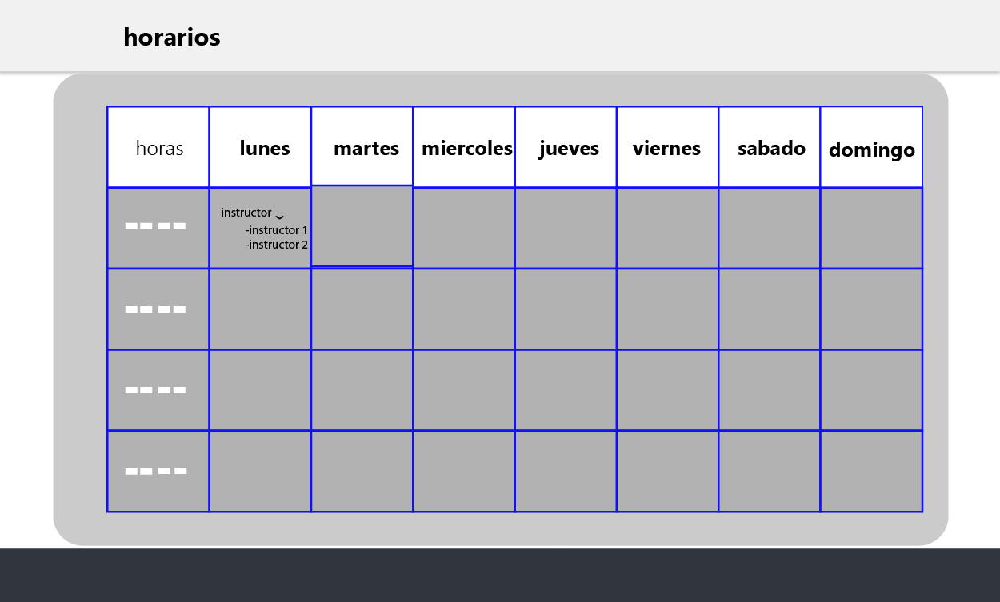
| requerimiento-004 modulo solicitar ambiente |
prioridad:
complejidad |
alta:x
alta : |
medio :
medio :x |
bajo :
bajo : |
| entradas |
|
| salidas |
- Redirección al panel correspondiente al rol del usuario
- mensajes de error o extito
|
| rol |
|
Modulo Solicitar Ambiente
1. discripción funcional:
Este módulo permitirá a los usuarios (administradores o instructores) consultar los ambientes disponibles y realizar solicitudes para reservar un ambiente específico según sus necesidades.
2. funcionalidades principales
1.visualizacion de ambiente disponible:
- Lista de ambientes organizados por:
- Nombre o número del ambiente.
- Estado actual (Disponible, Ocupado, En mantenimiento).
3. seguimiento de solicitudes
- Sección donde los usuarios pueden ver:
- Estado de sus solicitudes (Pendiente, Aprobada, Rechazada).
- Detalles del ambiente solicitado
3.validaciones necesarias
- Mostrar solo los ambientes disponibles según los filtros aplicados.
- No permitir solicitudes para horarios ya ocupados por otro usuario.
- Verificar que el solicitante tenga permisos para realizar la solicitud.
- Notificar al usuario si un ambiente solicitado no está disponible después de confirmar la solicitud
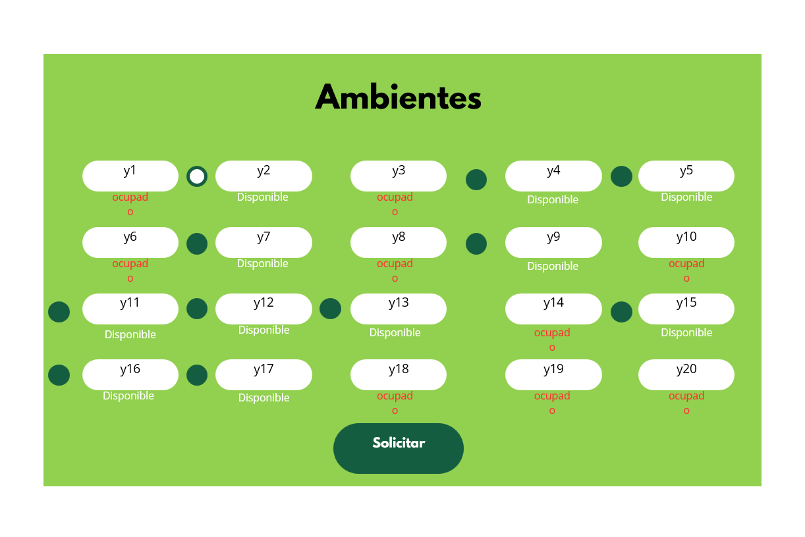
| requerimiento-005 modulo de mensajes |
prioridad:
complejidad |
alta:x
alta : |
medio :
medio :x |
bajo :
bajo : |
| entradas |
|
| salidas |
|
| rol |
- administador
- instructor
- aprendiz
|
Modulo de mensajes
1.discripción funcional
El usuario necesita un módulo llamado "Mensaje" que permita enviar notificaciones personalizadas a otros usuarios del sistema, como aprendices, instructores o administradores. Este módulo facilita la comunicación directa y el seguimiento de notificaciones enviadas.
2. funcionalidades principales :
1. creaciones de notificaciones
- La instructora puede redactar mensajes personalizados que incluyan:
- adjuntar archivos (opcional)si es necesario
2. seleccion de destimatarios
- enviaar notificaciones a :
- usuarios individuales (identificación)
3. historira de mensajes enviado
- lista de notificaciones enviadas con detalles:
- estado (entregado o pendiente)
3. validaciones necesarias
- seleccion de destinatarios:: Verificar que los usuarios seleccionados existen en el sistema.
- mensajes duplicados : envier envios repetidos
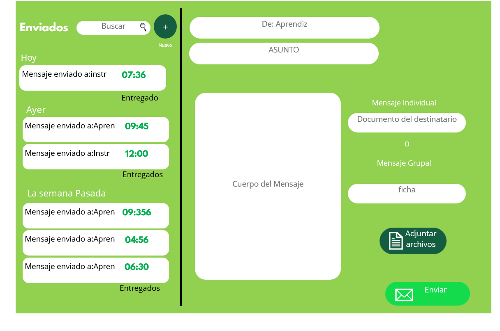
| requerimiento-006 asignar instructor |
prioridad:
complejidad |
alta:x
alta : |
medio :
medio :x |
bajo :
bajo : |
| entradas |
- nombre del aprendiz
- ficha de formación
- ficha de ingreso a la etapa produciva
|
| salidas |
- lista de instruciones disponibles con información
|
| rol |
|
Modulo asignar instructor
1.discripción funcional:
El usuario necesita un módulo que permita asignar instructores a aprendices en etapa productiva. Este módulo debe validar si el aprendiz ya tiene un instructor asignado antes de completar la nueva asignación
2. funcionalidades principales:
1.visualizacion de aprencices elegibles
<
- lista de aprendices que ingresa a la etapa productiva y aun no tiene instructor asignado
- fecha de ingreso de etapa productiva
2. selección de instructores:
- lista de instructores disponibles con informacion como:
- numero de aprendises ya asignados
asignación y validación:
- Antes de asignar, el sistema verifica:
- si el aprendiz ya tiene un instructor asignado
- la disponibilidad del instructor seleccionado
- confirmacion visual de la asignacion exitosa
historial de asignaciones
- registro de asignaciones realizadas, mostrando :
- fecha y hora de la asignacion
validaciones necesarias
- no permitir asignar un aprendiz a mas un instructor
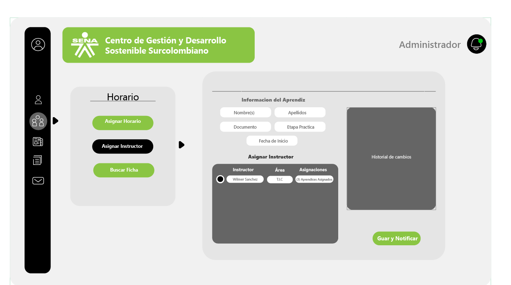
| requerimiento-007 Modulo Horarios |
prioridad:
complejidad |
alta:x
alta : |
medio :
medio :x |
bajo :
bajo : |
| entradas |
- boton para entrar al modulo
|
| salidas |
|
| rol |
|
Horarios
El módulo "Horarios" permite al instructor gestionar su programación semanal, mostrando los cursos que le corresponden cada día. También facilita la interacción directa para tomar la asistencia de los aprendices asignados en un día específico
funcionalidades principales
1. visualizacion del horario semanal:
- Al ingresar al módulo, se despliega una tabla en la parte derecha con los días de la semana.
- nombre del curso asignado
- Horario correspondiente (bloques que le correspondes)
- Ubicación o aula (si aplica).
| requerimiento-008 Modulo Asistencia |
prioridad:
complejidad |
alta:x
alta : |
medio :
medio :x |
bajo :
bajo : |
| entradas |
- boton en la tabla de horario
|
| salidas |
- lista de estudiantes asignados
|
| rol |
|
Modulo Asistencia
- Al presionar un día, de la tabla de horarios se despliega una lista de aprendices inscritos en el curso asignado para ese día.
- Información de los aprendices:
- estado actual de la asistencia (pendiente, presente, ausencia)
- integración con la funcinalidad de asistencia
- Desde la lista de aprendiz, el instructor puede tomar la asistencia directamente para el curso y el día seleccionados.
- mostrar unicamente los cursos asignados al instructor
- bloquear la toma de asistncia si el dia no corresponde al actual
Los horarios deben sincronizarse con la programación general del sistema
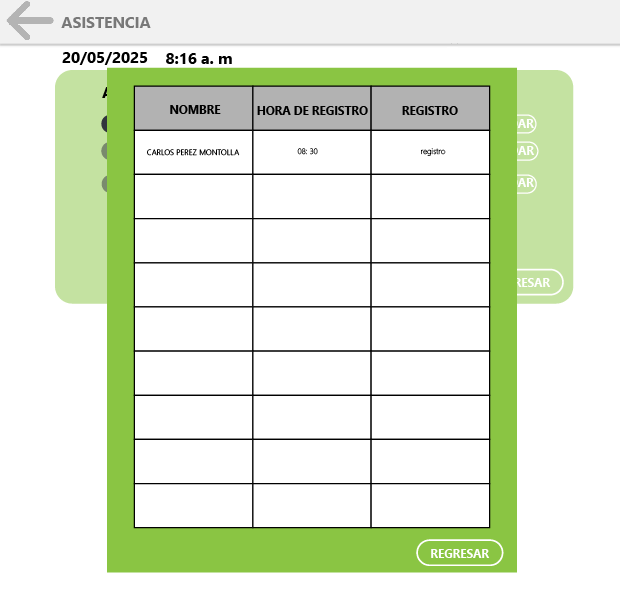
| requerimiento-009 Modulo Reporte |
prioridad:
complejidad |
alta:x
alta : |
medio :
medio :x |
bajo :
bajo : |
| entradas |
- boton para entrar al modulo
- filtros de busqueda
|
| salidas |
|
| rol |
- administador
- instructor
- aprendiz
|
Modulo de Reporte
1.discripción :
El módulo permite a los usuarios descargar reportes personalizados basados en los registros de asistencias. Los reportes se generan utilizando filtros específicos según el rol del usuario que realiza la búsqueda
funcionalidades principales :
- los filtros disponible depende del rol del usuario
- aprendiz:buscar reportes de su propia asistencia
- instructor:buscar reportes de los aprendices
- administador:buscar reportes de todos los usuarios registrado en el sistencia
- opciones de filtro comunes:
- nombre de numero de identificador
2.generación del reporte :
- reporte detallado con información como:
- fecha de estado de asistencia
3. descarga de reporte
- formato disponible :PDF, Excel
- Archivo generado con un nombre estándar (ejemplo:"Reporte Asistencias_[Fecha].pdf").
3. validaciones necesaria
- Verificar los permisos del usuario para acceder a los datos solicitados.
- Validar la existencia de registros para el filtro aplicado.
- Limitar los reportes descargados al ámbito de acción del usuario (e.g., un aprendiz solo puede descargar sus propios reportes).
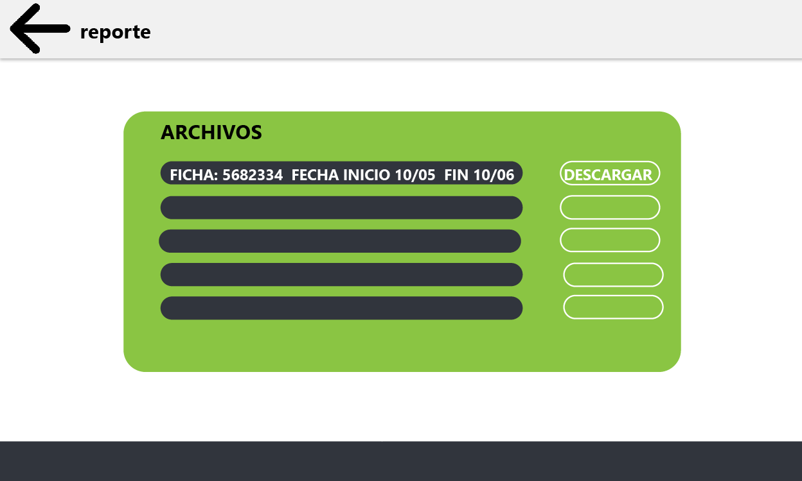
| requerimiento-0010 Modulo Etapa Practica |
prioridad:
complejidad |
alta:x
alta : |
medio :
medio :x |
bajo :
bajo : |
| entradas |
- boton para entrar al modulo
|
| salidas |
- Lista de fichas asociadas a los estudiantes que esta supervisando
|
| rol |
|
Modulo Etapa Practica
1.discripcion funcional
El módulo permite a los instructores gestionar las bitácoras de los aprendices que supervisan. Las bitácoras están organizadas por fichas de los cursos, lo que facilita la revisión. Una vez verificadas, las bitácoras se envían al administrador responsable
2.funcionalidades principales
organización de bitacoras
- lista de aprendices agrupados por ficha de curso.
- estado de la bitacora(pendiente de revision, verificada)
revisión de bítacoras
- Visualización del contenido de la bitácora dentro del módulo.
- Posibilidad de añadir observaciones o notas relacionadas con la bitácora.
3.envio de admistrador
- Botón para enviar una o varias bitácoras al administrador encargado.
- Confirmación del envío con registro de:

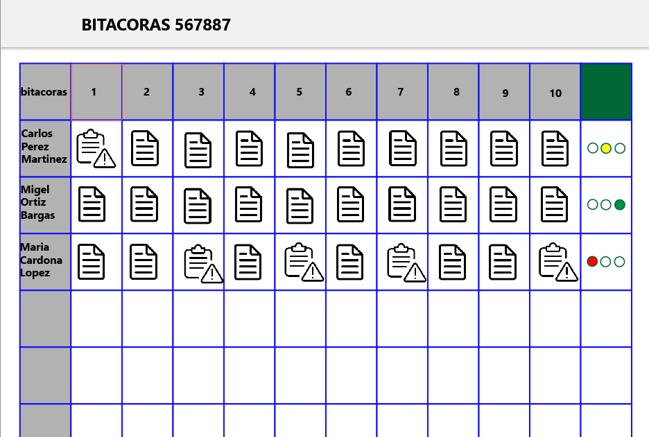
| REQ-0011 Notificaciones |
Priorida:
Complejidad: |
Alta: x
Alta: |
Medio: x
Medio: |
Bajo: x
Bajo: |
Entradas |
- Botón para ingresar a las Notificaciones
|
| Salidas |
- Historial de Notificaciones
|
Rol |
- Administrador
- Aprendiz
- Instructor
|
Notificaciones
Requerimiento: Notificaciones
- Descripcion Funcional:
El usuario debe recibir notificaciones dentro del software.
Las Cuales seran accesibles a traves de una campana ubicada
en la parte superior de la interfaz. Este sistema de notificaciones le permite estar informado/a sobre tareas
,eventos o mensajes relevantes en tiempo real.
- Funcionalidades Principales:
- Vizualizaciones de Notificaciones:
- La campana mostrara un indicador numericon
la cantidad de notificacionesno leídas
- Al hacer click en la campana, se despliega un menú
con las notificaciones recientes, ordenadas cronológicamente
- Contenido de las notificaciones:
- Las Notificaciones deben incluir:
- Título o Resumen del Mensaje
- Fecha y Hora de Recepción
- Un enlace para Acceder si es un archivo
- Gestión de Notificaciones:
- El/la Instructor puede marcar una notificacion
como "Leída" para que desaparezca del contador de Pendientes
- Historial Accesible Para consultar NotificacionesPasadas
- Validaciones Necesarias:
- Solo las Notificaciones Relevantes para el Rol del/a
Instructor deben Mostrase
- Las Notificaciones leídas deben ser eliminadas del Indicador
de pendientes, pero deben quedar registradas en el Historial
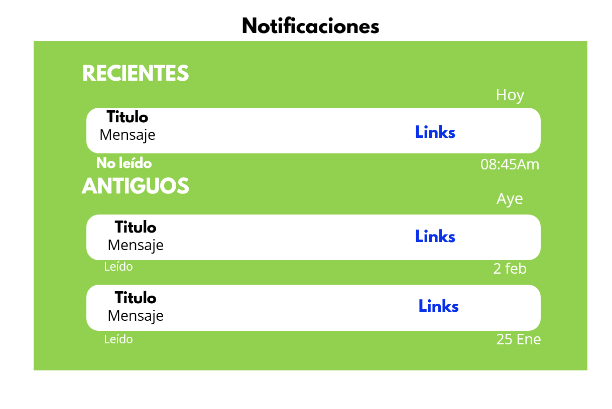
| REQ-0012 Archivos |
Priorida:
Complejidad: |
Alta: x
Alta: |
Medio:
Medio: x |
Bajo:
Bajo: |
Entradas |
- Por Aprendiz(nombre o numero de Identificación)
- Por Ficha de Formación
- Por Rango de Fechas
|
| Salidas |
|
Rol |
|
Archivos
Requerimiento: Módulo Archivos
- Funcionalidades Principales:
- Vizualización de Bitacoras e Informes:
- Las Bitacoras y los informes deben mostrarse en secciones
separadas dentro del Módulo
- Cada Seccion debe incluir una tabla con los
los Archivos disponibles
- Búsqueda Mediante Filtros:
- Opciones de filtro para localizar bitacoras o Informes:
- Por Aprendiz(Nombre o Número de Identificación).
- Los Resultados Beben Actualizarse dinamicamente al aplicar
los Filtros.
- Visualización de Bitacoras En Tabla:
- La Tabla de Bitacoras Incluye:
- Bitácoras: Botón Para Visualizarla.
- Semaforo de estado: Indicadodor visual que muestra
el estado de la Revisión:
- Amarillo: Pendiente De correcciones.
- Verde: Lista Para Enviar.
- Botón de Acción para cambiar el estado de bitácora según su revision.
- Envío De Bitácoras al Coordinador:
- Una vez Revisadas, las bitácoras se peden seleccionar
individualmente o en Grupo.
- Al presionar el Botón "Enviar", el sistema solicita Seleccionar al
coordinador Destinatario.
- Confirmacion de envío exitosa con registro en el Historial
- Validaciones Necesarias:
- El semaforo solo puede cambiar de estado si se revisa la Bitacora
- No se permite Enviar bitacoras con estado Rojo o Amarillo
- La lista de Coordinadores disponibles debe cargarse dinámicamente
al intentar enviar.
| REQ-0013 Módulos Bitácoras |
Priorida:
Complejidad: |
Alta: x
Alta: |
Medio:
Medio: x |
Bajo:
Bajo: |
Entradas |
- Botón para Módulo Bitácoras
|
| Salidas |
- Redirección al panel de cargar Bitácora
|
Rol |
|
Bitácoras
Módulo Subir Bitácoras(Rol Aprendiz)
Descripción: El sofware Permite al Aprendiz subir sus Bitácoras de sus
Actividades. Este Módulo Permitirá la carga de documneto en Formato PDF o Word
Funcionalidad:
-Cargar Archivo de Bitácora.
-Visualizar y editar Entradas antes de Enviar.
-Confirmacion de Envio Exitoso.
Pantalla Principal del Módulo:
-Botón Cargar "Bitácora": Ubicado en la Parte superior izquierda de la
pantalla, visible al entrar al Módulo.
Modelo de Interacción:
-Formulario de Carga: Aparece al hacer click en "Cargar Bitácora". Incluye Campos
para seleccionar el archivo (Boton "seleccionar Archivo")
-Botón "Enviar": Ubicado al final del formulario para confirmar la carga,
seguido de un mensaje de confirmacion de envio exitoso.
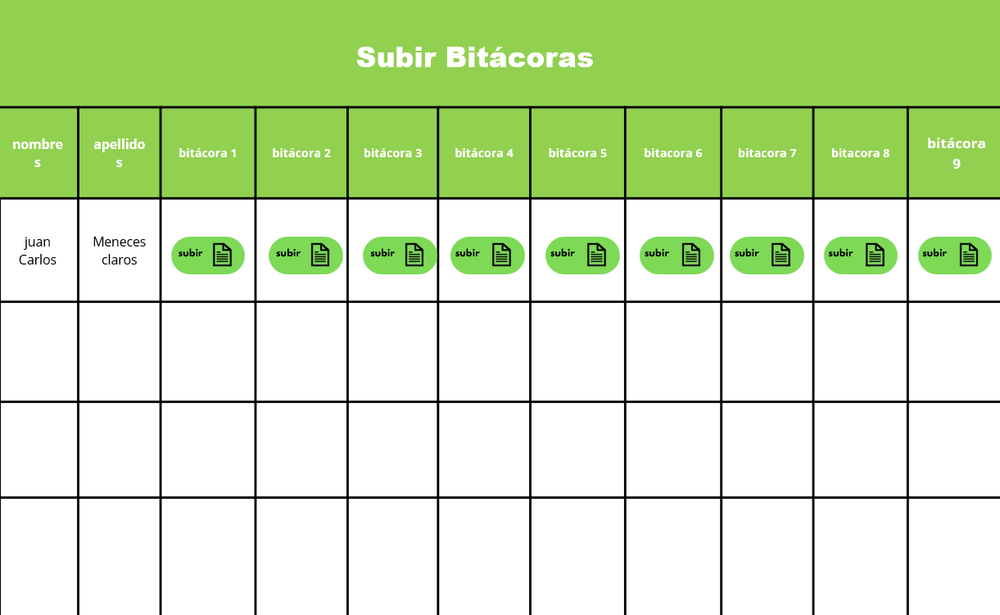
| REQ-0014 Módulo Enviar Solicitudes |
Priorida:
Complejidad: |
Alta: x
Alta: |
Medio:
Medio: x |
Bajo:
Bajo: |
Entradas |
|
| Salidas |
- Redirección al panel de cargar Redactar
|
Rol |
|
Enviar Solicitudes en General
-Descripcción: El aprendiz debe poder enviar solicitudes asu instructor sobre
cualquier comentario relevante.
Funcionalidad:
- Seleccionar Destinatarios.
Pantalla principal del Módulo:
-Botón "Nueva Solicitud" Ubicado en la parte superior derecha.
-Modelon de Interacción:- Ventana de Redacción:
Se habre al hacer click en "Nueva Solicitud". Contiene un Campo
de texto para el mensaje, un desplegable para seleccionar Destinatarios
y un botón "Enviar" al final.
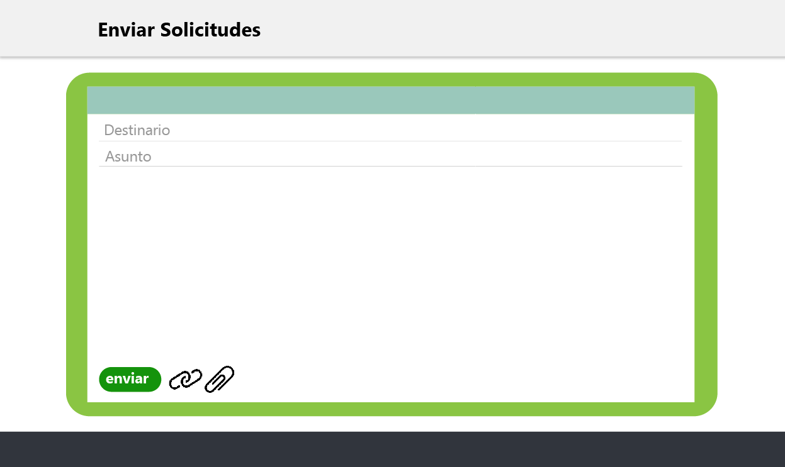
| REQ-0015 Relleno de Formato |
Priorida:
Complejidad: |
Alta: x
Alta: |
Medio:
Medio: x |
Bajo:
Bajo: |
Entradas |
- Botón para entar al formato
|
| Salidas |
- Opciones para enviar el Formato
|
Rol |
|
Rellenar Formatos.
-Descripción: Permite al aprendiz completar y enviar formatos Necesarios
para la etapa productiva, tales como reporte de avance.
-Funcionalidad:
-Acceso a la plantilla de formatos.
-Enviar el formato.
-Pantalla Principal del Modulo:
-Lista de formatos disponibles
:en la parte central con un botón "Completar" junto a cada formato.
-Modelo de Interacción: -Formulario de Formato:
Aparece al seleccionar "Completar". Incluye Campos editables según el
tipo de formato y un Botón "Guardar" al pie del formulario para Enviar.
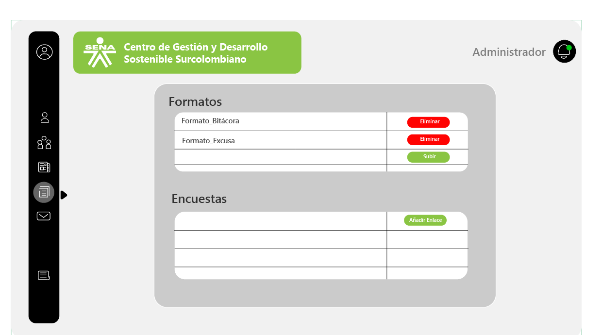
| REQ-0016 Horarios |
Priorida:
Complejidad: |
Alta: x
Alta: |
Medio:
Medio: x |
Bajo:
Bajo: |
Entradas |
- Botón para entar a los Modulos
|
| Salidas |
- Redirección al panel de Horarios
|
Rol |
|
Horarios
Modulo Horarios rol (Aprendiz)
-Descripcción: El aprendiz debe tener acceso a los horarios de Clases, Actividades
y eventos Programados.
Funcionalidad:
-Visualizar horarios semanales:
Pantalla Principal Del Módulo:
-Vista del Calendario Semanal: Ocupa la Mayor parte de la
Pantalla, mostrando el horario semanal.
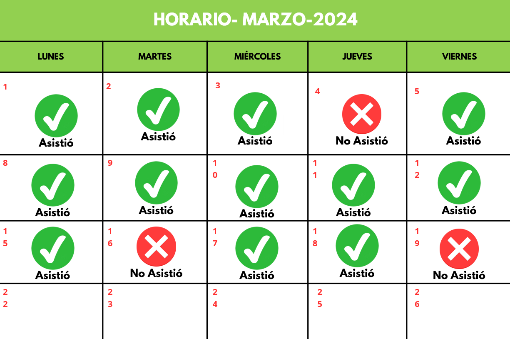